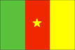
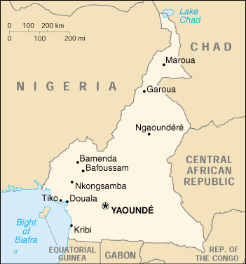

{kind=link}


| Cameroon |  |
|
|  | |
| Introduction |
Background: The former French Cameroon and part of British Cameroon merged in 1961 to form the present country. Cameroon has generally enjoyed stability, which has permitted the development of agriculture, roads, and railways, as well as a petroleum industry. Despite movement toward democratic reform, political power remains firmly in the hands of an ethnic oligarchy.
| Geography |
Location: Western Africa, bordering the Bight of Biafra, between Equatorial Guinea and Nigeria
Geographic coordinates: 6 00 N, 12 00 E
Map references: Africa
Area:
total:
475,440 sq km
land:
469,440 sq km
water:
6,000 sq km
Area - comparative: slightly larger than California
Land boundaries:
total:
4,591 km
border countries:
Central African Republic 797 km, Chad 1,094 km, Republic of the Congo 523 km, Equatorial Guinea 189 km, Gabon 298 km, Nigeria 1,690 km
Coastline: 402 km
Maritime claims:
territorial sea:
50 nm
Climate: varies with terrain, from tropical along coast to semiarid and hot in north
Terrain: diverse, with coastal plain in southwest, dissected plateau in center, mountains in west, plains in north
Elevation extremes:
lowest point:
Atlantic Ocean 0 m
highest point:
Fako 4,095 m
Natural resources: petroleum, bauxite, iron ore, timber, hydropower
Land use:
arable land:
13%
permanent crops:
2%
permanent pastures:
4%
forests and woodland:
78%
other:
3% (1993 est.)
Irrigated land: 210 sq km (1993 est.)
Natural hazards: recent volcanic activity with release of poisonous gases
Environment - current issues: water-borne diseases are prevalent; deforestation; overgrazing; desertification; poaching; overfishing
Environment - international agreements:
party to:
Biodiversity, Climate Change, Desertification, Endangered Species, Law of the Sea, Ozone Layer Protection, Tropical Timber 83, Tropical Timber 94
signed, but not ratified:
Nuclear Test Ban
Geography - note: sometimes referred to as the hinge of Africa
| People |
Population:
15,421,937
note:
estimates for this country explicitly take into account the effects of excess mortality due to AIDS; this can result in lower life expectancy, higher infant mortality and death rates, lower population and growth rates, and changes in the distribution of population by age and sex than would otherwise be expected (July 2000 est.)
Age structure:
0-14 years:
43% (male 3,326,334; female 3,251,402)
15-64 years:
54% (male 4,181,038; female 4,153,680)
65 years and over:
3% (male 235,741; female 273,742) (2000 est.)
Population growth rate: 2.47% (2000 est.)
Birth rate: 36.6 births/1,000 population (2000 est.)
Death rate: 11.89 deaths/1,000 population (2000 est.)
Net migration rate: NA migrant(s)/1,000 population
Sex ratio:
at birth:
1.03 male(s)/female
under 15 years:
1.02 male(s)/female
15-64 years:
1.01 male(s)/female
65 years and over:
0.86 male(s)/female
total population:
1.01 male(s)/female (2000 est.)
Infant mortality rate: 70.87 deaths/1,000 live births (2000 est.)
Life expectancy at birth:
total population:
54.82 years
male:
54.01 years
female:
55.64 years (2000 est.)
Total fertility rate: 4.88 children born/woman (2000 est.)
Nationality:
noun:
Cameroonian(s)
adjective:
Cameroonian
Ethnic groups: Cameroon Highlanders 31%, Equatorial Bantu 19%, Kirdi 11%, Fulani 10%, Northwestern Bantu 8%, Eastern Nigritic 7%, other African 13%, non-African less than 1%
Religions: indigenous beliefs 40%, Christian 40%, Muslim 20%
Languages: 24 major African language groups, English (official), French (official)
Literacy:
definition:
age 15 and over can read and write
total population:
63.4%
male:
75%
female:
52.1% (1995 est.)
| Government |
Country name:
conventional long form:
Republic of Cameroon
conventional short form:
Cameroon
former:
French Cameroon
Data code: CM
Government type:
unitary republic; multiparty presidential regime (opposition parties legalized in 1990)
note:
preponderance of power remains with the president
Capital: Yaounde
Administrative divisions: 10 provinces; Adamaoua, Centre, Est, Extreme-Nord, Littoral, Nord, Nord-Ouest, Ouest, Sud, Sud-Ouest
Independence: 1 January 1960 (from UN trusteeship under French administration), 1 October 1961 (for areas ruled by Britain under UN trusteeship)
National holiday: National Day, 20 May (1972)
Constitution: 20 May 1972 approved by referendum; 2 June 1972 formally adopted
Legal system: based on French civil law system, with common law influence; does not accept compulsory ICJ jurisdiction
Suffrage: 21 years of age; universal
Executive branch:
chief of state:
President Paul BIYA (since 6 November 1982)
head of government:
Prime Minister Peter Mafany MUSONGE (since 19 September 1996)
cabinet:
Cabinet appointed by the president
elections:
president elected by popular vote for a seven-year term; election last held 12 October 1997 (next to be held NA October 2004); prime minister appointed by the president
election results:
President Paul BIYA reelected; percent of vote - Paul BIYA 92.6%; note - supporters of the opposition candidates boycotted the elections, making a comparison of vote shares relatively meaningless
Legislative branch:
unicameral National Assembly or Assemblee Nationale (180 seats; members are elected by direct popular vote to serve five-year terms; note - the president can either lengthen or shorten the term of the legislature)
elections:
last held 11 May 1997 (next to be held NA 2002)
election results:
percent of vote by party - NA; seats by party - RDCP 109, SDF 43, UNDP 13, UDC 5, UPC-K 1, MDR 1, MLJC 1; note - results from 7 contested seats were cancelled by the Supreme Court and have yet to be filled
note:
the constitution calls for an upper chamber for the legislature, to be called a Senate, but it has yet to be established
Judicial branch: Supreme Court, judges are appointed by the president
Political parties and leaders: Cameroonian Democratic Union or UDC [Adamou NDAM NJOYA]; Cameroon Liberation and Development Movement or MLDC [Marcel YONDO]; Democratic Rally of the Cameroon People or RDPC (the RDPC or its predecessor parties have ruled since independence) [Paul BIYA, president]; Movement for the Defense of the Republic or MDR [Dakole DAISSALA]; Movement for the Liberation of Cameroonian Youths or MLJC [leader NA]; National Union for Democracy and Progress or UNDP [Maigari BELLO BOUBA, chairman]; Social Democratic Front or SDF [John FRU NDI]; Union of Cameroonian Populations or UPC-K [Augustin Frederick KODOG]
Political pressure groups and leaders: Alliance for Change or FAC [leader NA]; Cameroon Anglophone Movement or CAM [Vishe FAI, secretary general]; Southern Cameroon National Council [Henry FOSSUNG]
International organization participation: ACCT, ACP, AfDB, BDEAC, C, CCC, CEEAC, ECA, FAO, FZ, G-19, G-77, IAEA, IBRD, ICAO, ICC, ICFTU, ICRM, IDA, IDB, IFAD, IFC, IFRCS, ILO, IMF, IMO, Inmarsat, Intelsat, Interpol, IOC, ITU, NAM, OAU, OIC, OPCW, PCA, UDEAC, UN, UNCTAD, UNESCO, UNIDO, UNITAR, UPU, WCL, WFTU, WHO, WIPO, WMO, WToO, WTrO
Diplomatic representation in the US:
chief of mission:
Ambassador Jerome MENDOUGA
chancery:
2349 Massachusetts Avenue NW, Washington, DC 20008
telephone:
[1] (202) 265-8790
FAX:
[1] (202) 387-3826
Diplomatic representation from the US:
chief of mission:
Ambassador John M. YATES
embassy:
Rue Nachtigal, Yaounde
mailing address:
B. P. 817, Yaounde; pouch: American Embassy, Department of State, Washington, DC 20521-2520
telephone:
[237] 23-45-52
FAX:
[237] 23-07-53
Flag description: three equal vertical bands of green (hoist side), red, and yellow with a yellow five-pointed star centered in the red band; uses the popular pan-African colors of Ethiopia
| Economy |
Economy - overview: Because of its oil resources and favorable agricultural conditions, Cameroon has one of the best-endowed primary commodity economies in sub-Saharan Africa. Still, it faces many of the serious problems facing other underdeveloped countries, such as a top-heavy civil service and a generally unfavorable climate for business enterprise. Since 1990, the government has embarked on various IMF and World Bank programs designed to spur business investment, increase efficiency in agriculture, improve trade, and recapitalize the nation's banks. The government, however, has failed to press forward vigorously with these programs. The latest enhanced structural adjustment agreement was signed in October 1997; the parties hope this will prove more successful, yet government mismanagement and corruption remain problems. Inflation has been brought back under control. Progress toward privatization of remaining state industry should support continued economic growth in 2000.
GDP: purchasing power parity - $31.5 billion (1999 est.)
GDP - real growth rate: 5.2% (1999 est.)
GDP - per capita: purchasing power parity - $2,000 (1999 est.)
GDP - composition by sector:
agriculture:
42%
industry:
22%
services:
36% (1997 est.)
Population below poverty line: 40% (1984 est.)
Household income or consumption by percentage share:
lowest 10%:
NA%
highest 10%:
NA%
Inflation rate (consumer prices): 2.1% (1999 est.)
Labor force: NA
Labor force - by occupation: agriculture 70%, industry and commerce 13%, other 17%
Unemployment rate: 30% (1998 est.)
Budget:
revenues:
$2.23 billion
expenditures:
$2.23 billion, including capital expenditures of $NA (FY96/97 est.)
Industries: petroleum production and refining, food processing, light consumer goods, textiles, lumber
Industrial production growth rate: NA%
Electricity - production: 3.285 billion kWh (1998)
Electricity - production by source:
fossil fuel:
2.59%
hydro:
97.41%
nuclear:
0%
other:
0% (1998)
Electricity - consumption: 3.055 billion kWh (1998)
Electricity - exports: 0 kWh (1998)
Electricity - imports: 0 kWh (1998)
Agriculture - products: coffee, cocoa, cotton, rubber, bananas, oilseed, grains, root starches; livestock; timber
Exports: $2 billion (f.o.b., 1999)
Exports - commodities: crude oil and petroleum products, lumber, cocoa beans, aluminum, coffee, cotton
Exports - partners: Italy 25%, Spain 20%, France 16%, Netherlands 7% (1997 est.)
Imports: $1.5 billion (f.o.b., 1999)
Imports - commodities: machines and electrical equipment, transport equipment, fuel, food
Imports - partners: France 25%, Nigeria 8%, US 8%, Germany 6% (1997 est.)
Debt - external: $11.5 billion (1999 est.)
Economic aid - recipient: $606.1 million (1995); note - France signed two loan agreements totaling $55 million in September 1997, and the Paris Club agreed in October 1997 to reduce the official debt by 50% and to reschedule it on favorable terms with a consolidation of payments due through 2000
Currency: 1 Communaute Financiere Africaine franc (CFAF) = 100 centimes
Exchange rates:
Communaute Financiere Africaine francs (CFAF) per US$1 - 647.25 (January 2000), 615.70 (1999), 589.95 (1998), 583.67 (1997), 511.55 (1996), 499.15 (1995)
note:
since 1 January 1999, the CFAF is pegged to the euro at a rate of 655.957 CFA francs per euro
Fiscal year: 1 July - 30 June
| Communications |
Telephones - main lines in use: 60,000 (1995)
Telephones - mobile cellular: 2,800 (1995)
Telephone system:
available only to business and government
domestic:
cable, microwave radio relay, and tropospheric scatter
international:
satellite earth stations - 2 Intelsat (Atlantic Ocean)
Radio broadcast stations: AM 11, FM 8, shortwave 3 (1998)
Radios: 2.27 million (1997)
Television broadcast stations: 1 (1998)
Televisions: 450,000 (1997)
Internet Service Providers (ISPs): NA
| Transportation |
Railways:
total:
1,104 km
narrow gauge:
1,104 km 1.000-m gauge (1995 est.)
Highways:
total:
34,300 km
paved:
4,288 km
unpaved:
30,012 km (1995 est.)
Waterways: 2,090 km; of decreasing importance
Ports and harbors: Bonaberi, Douala, Garoua, Kribi, Tiko
Airports: 50 (1999 est.)
Airports - with paved runways:
total:
11
over 3,047 m:
2
2,438 to 3,047 m:
4
1,524 to 2,437 m:
3
914 to 1,523 m:
1
under 914 m:
1 (1999 est.)
Airports - with unpaved runways:
total:
39
1,524 to 2,437 m:
8
914 to 1,523 m:
20
under 914 m:
11 (1999 est.)
| Military |
Military branches: Army, Navy (includes Naval Infantry), Air Force, National Gendarmerie, Presidential Guard
Military manpower - military age: 18 years of age
Military manpower - availability:
males age 15-49:
3,653,548 (2000 est.)
Military manpower - fit for military service:
males age 15-49:
1,847,871 (2000 est.)
Military manpower - reaching military age annually:
males:
169,661 (2000 est.)
Military expenditures - dollar figure: $155 million (FY98/99)
Military expenditures - percent of GDP: 1.4% (FY98/99)
| Transnational Issues |
Disputes - international: delimitation of international boundaries in the vicinity of Lake Chad, the lack of which led to border incidents in the past, is complete and awaits ratification by Cameroon, Chad, Niger, and Nigeria; dispute with Nigeria over land and maritime boundaries around the Bakasi Peninsula and Lake Chad is currently before the ICJ, as is a dispute with Equatorial Guinea over the exclusive maritime economic zone